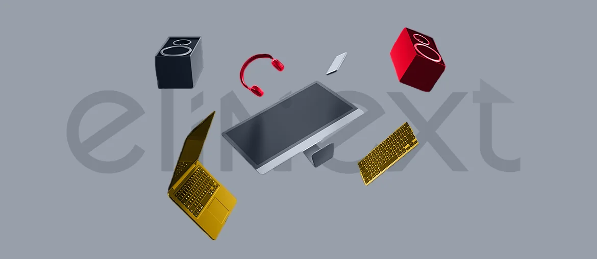

Trace the flows
Trace ArkIA, app, Zendesk, Cervello, and finance flows. Mark every manual handoff and missing data field.
Arklok is expanding from hardware rental into software-led service. The next challenge is making inventory, tickets, billing, and field work feel like one system for every customer.
We saw your active Service Desk hiring signal and Arklok's push around ArkIA, ArkSales, and customer support portals. This brief shows where a focused engineering squad could reduce friction first.
The Service Desk hiring signal points to higher support load. At the same time, Arklok is adding software around ArkIA, ArkSales, ITSM, and service desk. That mix can create tool gaps between inventory, tickets, billing, and field work. Your App Store listing names quote requests, tickets, cadastro updates, invoices, and Cervello integration. If these flows stay split, customers wait longer and teams chase status manually. A CTO and COO will feel that cost in SLA trust.
The support page splits ticket creation and tracking across two portals.
Useful next stepMap those handoffs and choose one status source.
PCaaS promises inventory reports, SLA tracking, and ArkiA service.
Useful next stepStart with one event stream linking asset, ticket, and invoice data.
A dedicated squad under Arklok's PO, with weekly demos to Mauro's team.
Stack fit: Java/Spring, .NET, Angular or React, Python, AWS, Docker.
Trace ArkIA, app, Zendesk, Cervello, and finance flows. Mark every manual handoff and missing data field.
Build a small API layer for asset, ticket, SLA, and invoice events. Keep current tools in place.
Ship one account view where customers see requests, equipment status, and next actions without switching portals.
Add automated tests, release checks, and usage logs so Service Desk changes do not break SLAs.
Elinext is a full-cycle software development company, active since 1997. We have about 700 in-house specialists, with no freelancers and no subcontractors. For Arklok, the fit is enterprise web, backend, QA, DevOps, and cloud delivery under your PO or PM. We hold ISO 9001 and ISO 27001, useful for service and data-heavy work. Teams have served Broadcom, Siemens, Volkswagen, TRUMPF, and TUI. That mix fits a focused squad for ArkIA, support flows, and customer status work.

Elinext built a role-based asset system that simplified equipment control and reduced time spent on asset management.
Read the case study
Elinext helped automate labels, barcode flows, ERP links, and real-time warehouse services for logistics operations.
Read the case study